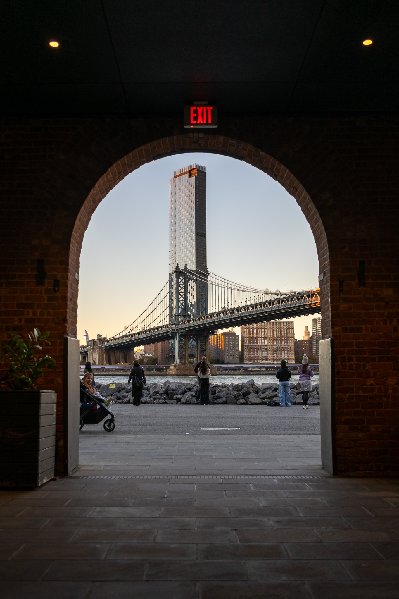

Photography
Through the Lens
What began as a casual hobby has grown into a genuine passion. Photography has become a creative outlet that allows me to capture the sports and moments shared by friends and family, preserving high-quality images that hold lasting meaning. Beyond documenting memories, it has given me a new way to engage with the world — one that encourages patience, attention, and an appreciation for detail.
Each image doesn't stop at the press of the shutter — the creative process continues through post-editing, reflection, and constantly experimenting with new ways to add character and originality.


